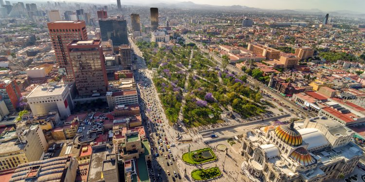

Introduction
Mexico City’s high-capacity transit anchors daily life at a metropolitan scale. The Metro,one of the busiest systems in the Americas,connected distant neighborhoods through fast, grade-separated service, while Metrobús extends high-reliability corridors along the surface. Together they shape flows of people, place, and possibility.
 Image Source: https://www.mexperience.com/mexico-city-to-be-known-as-mexico-city/